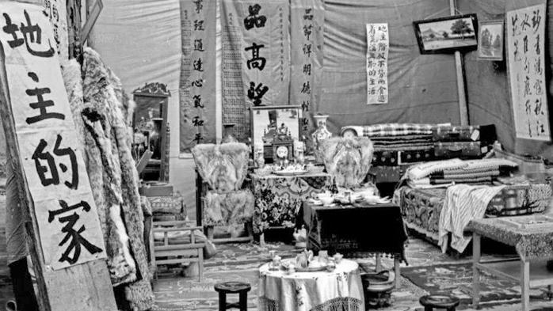
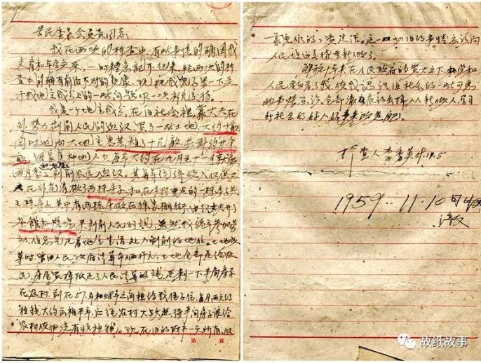
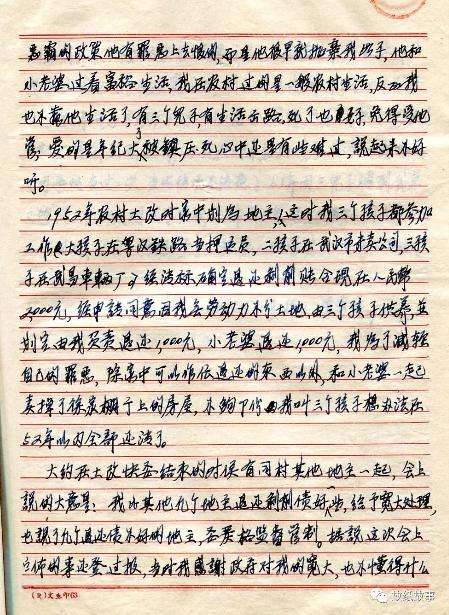

|
回目录 回主页 |

提要：李秀英，1892年出生，在写下以下笔者录入的这份1959年写的坦白书时，已经年近七十岁了。这份坦白书的内容请大家自己阅读，笔者就不再多做评论了（大家懂得），仅补充一下她写这份坦白书时的处境，这时她已经不在农村而是跟着儿子住在武汉市，因为成份问题她还必须向居委会定时汇报思想，这份坦白书就是写给居委会的。另，其丈夫在土改时已经被政府镇压，坦白书之后，笔者还录入了一段1965年她在一份坦白材料中写的对丈夫被镇压的感想，比较少见。
土改时拼凑出来展览的地主的家 李秀英是一个旧时期普普通通的地主，她的经历是地主分子的共同经历。

【我是一个地主成份，在旧社会里，靠丈夫在外势力剥削人民的血汗，买了一些土地，大约十亩，同时也向大地主容某租了十几亩，共计廿余亩。因家庭种地人少，每年大约在九月至十一月就雇佣月季工和一些短工，剥削农民血汗。其每年经济收入仅供丈夫在外花销，做了两栋房子和在乡村重建的一栋房子，共三栋房子，其中有两栋房做在徐家棚街，由我丈夫开了茶馆和牌场，来剥削人民的钱。虽然我终年参加劳动，但总是过着地主生活，处于剥削的地位。土地改革时，曾由人民政府清算币两千元，土地全部还给农民，房屋卖掉抵还了人民清算的钱，还剩下半间房子在农村，前在57年和58年之间租给我侄子住，每月两元的租钱，大约出租半年后经农村大跃进，将半间房子让给农村实用，没有收租钱。现在旧的财产一无所有，仅靠儿们的工资过活。这一切旧的事情应该向人民坦白交代，重新做人。
女地主李秀英的一份坦白书 解放十年来，在人民政府的宽大之下，党和人民教育了我，使我认识旧社会的一些可恶的事情，应该全部彻底的丢掉，重新做人，学习新社会的好人好事来改造自己。 检查人李秀英 1959.11.5】

【当时我处于恨爱的交织状态。所谓的恨不是从政府镇压恶霸的政策他有罪恶上去恨的，而是他很早就抛弃我母子，他和小老婆过着富裕生活，我在农村过的是一般农村生活，反正我也不靠他生活了，有三个儿子，有生活出路了，死了也好，免得受他管；爱的是年纪大了被镇压死，心中还是有些难过，说起来不好听。】
女地主李秀英的一份坦白书 来源：故纸故事 作者：孙陇 |
回目录 回主页 |